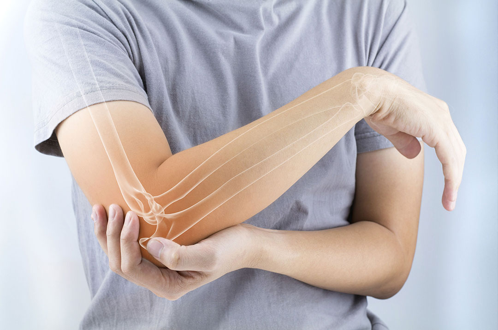

Golfer's Elbow (Medial Epicondylitis)
- Definition: Golfer's elbow is characterized by pain and inflammation on the inner part of the elbow, often resulting from repetitive gripping or wrist flexion.

Physiotherapy Management:
- Pain Management:Rest and Activity Modification: Recommending modifications to activities that may aggravate symptoms.
- Range of Motion (ROM) Exercises:Ice Therapy: Applying ice to reduce inflammation and relieve pain.
- Strengthening Exercises:Strengthening Exercises: Gradual introduction of exercises targeting the muscles of the forearm and wrist.
- Joint Mobilization:Stretching Exercises: Incorporating stretches to improve flexibility and reduce tension.
- Home Exercise Program:Joint Mobilization: Manual techniques to enhance joint mobility and reduce stiffness.
- Taping:Using techniques such as kinesiology taping for support and pain relief.
General Considerations for Both Conditions:
- Ergonomic Assessment: Evaluating and modifying workplace or activity-related ergonomics to reduce strain.
- Bracing: Recommending braces or splints to provide support and reduce stress on the affected tendons.
- Patient Education: Educating the patient on proper techniques, ergonomics, and the importance of adherence to the physiotherapy program.
- Gradual Return to Activities: Guiding the patient in a phased return to activities, ensuring a balance between rest and exercise.
It's crucial for individuals with frozen shoulder or shoulder capsulitis to consult with a healthcare professional, including a physiotherapist, for a comprehensive assessment and personalized treatment plan. Physiotherapy is a key component in managing these conditions, aiming to reduce pain, improve range of motion, and enhance overall shoulder function.